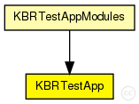
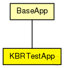

This documentation is released under the Creative Commons license
This documentation is released under the Creative Commons licenseSimple module of the KBR test application
Author: Ingmar Baumgart, Bernhard Heep
The following diagram shows usage relationships between types. Unresolved types are missing from the diagram. Click here to see the full picture.
The following diagram shows inheritance relationships for this type. Unresolved types are missing from the diagram. Click here to see the full picture.
| BaseApp (simple module) |
Base class for application implementations |
If a module type shows up more than once, that means it has been defined in more than one NED file.
| KBRTestAppModules (compound module) |
Compound module for a simple test application using the KBR interface |
| Name | Type | Default value | Description |
|---|---|---|---|
| rpcUdpTimeout | double |
default timeout value for direct RPCs |
|
| rpcKeyTimeout | double |
default timeout value for routed RPCs |
|
| optimizeTimeouts | bool |
calculate timeouts from measured RTTs and network coordinates |
|
| rpcExponentialBackoff | bool |
if true, doubles the timeout for every retransmission |
|
| debugOutput | bool |
enable debug output |
|
| testMsgInterval | double |
interval for sending test messages |
|
| testMsgSize | int |
payload size of the test message in bytes |
|
| msgHandleBufSize | int |
how many MsgHandles to store in circular buffer |
|
| lookupNodeIds | bool |
lookup only existing nodeIDs |
|
| activeNetwInitPhase | bool |
is app active in network init phase? |
|
| kbrOneWayTest | bool |
enable sending of one way test messages |
|
| kbrRpcTest | bool |
enable sending of RPC test calls |
|
| kbrLookupTest | bool |
enable periodic test lookups |
|
| failureLatency | double |
this latency is recorded for failed lookups and RPCs |
|
| onlyLookupInoffensiveNodes | bool |
if true only search for inoffensive nodes (use together with lookupNodeIds) |
| Name | Value | Description |
|---|---|---|
| class | KBRTestApp | |
| display | i=block/app |
| Name | Direction | Size | Description |
|---|---|---|---|
| udpIn | input |
gate from the UDP layer |
|
| from_lowerTier | input |
gate from the lower tier |
|
| from_upperTier | input |
gate from the upper tier |
|
| direct_in | input |
gate for sendDirect |
|
| trace_in | input |
gate for trace file commands |
|
| tcpIn | input |
gate from the TCP layer |
|
| tcpOut | output |
gate to the TCP layer |
|
| udpOut | output |
gate to the UDP layer |
|
| to_lowerTier | output |
gate to the lower tier |
|
| to_upperTier | output |
gate to the upper tier |
// // Simple module of the KBR test application // // @author Ingmar Baumgart, Bernhard Heep // simple KBRTestApp extends BaseApp { parameters: @class(KBRTestApp); double testMsgInterval @unit(s); // interval for sending test messages int testMsgSize @unit(B); // payload size of the test message in bytes int msgHandleBufSize; // how many MsgHandles to store in circular buffer bool lookupNodeIds; // lookup only existing nodeIDs bool activeNetwInitPhase; // is app active in network init phase? bool kbrOneWayTest; // enable sending of one way test messages bool kbrRpcTest; // enable sending of RPC test calls bool kbrLookupTest; // enable periodic test lookups double failureLatency @unit(s); // this latency is recorded for failed lookups and RPCs bool onlyLookupInoffensiveNodes; // if true only search for inoffensive nodes (use together with lookupNodeIds) }
This documentation is released under the Creative Commons license